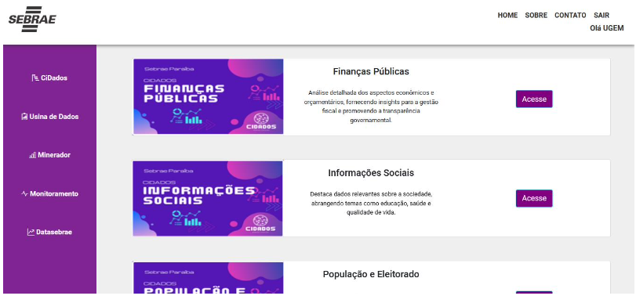

Portal de Serviços
O Portal de Serviços de Inteligência de Dados foi desenvolvido no âmbito do estágio obrigatório do curso de Tecnologia em Sistemas para Internet do IFPB, realizado na Unidade de Gestão Estratégica e Monitoramento (UGEM) do Sebrae-PB. O projeto foi pensado para substituir o antigo sistema SIME, modernizando a interface e melhorando a usabilidade e acessibilidade dos serviços oferecidos.
A plataforma foi desenvolvida com Python e Django no backend e HTML, CSS, JavaScript e Bootstrap no frontend. A estrutura do sistema contempla um módulo para funcionários, com acesso aos conteúdos analíticos, e um módulo administrativo com controle completo de postagens, permissões de usuários e atualizações.
O sistema implementa autenticação por perfil, navegação por sidebar dinâmica e integra os links de acesso aos painéis analíticos da organização, hospedados no Qlik Sense. A interface foi pensada para ser totalmente responsiva, adaptando-se a desktops e dispositivos móveis. Testes unitários foram desenvolvidos com Django para garantir robustez e confiabilidade no código.